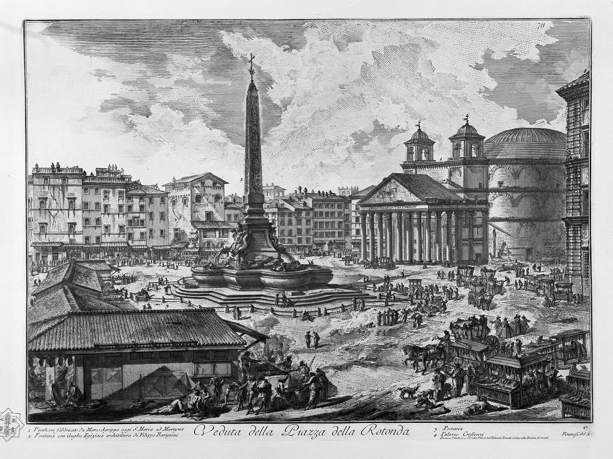
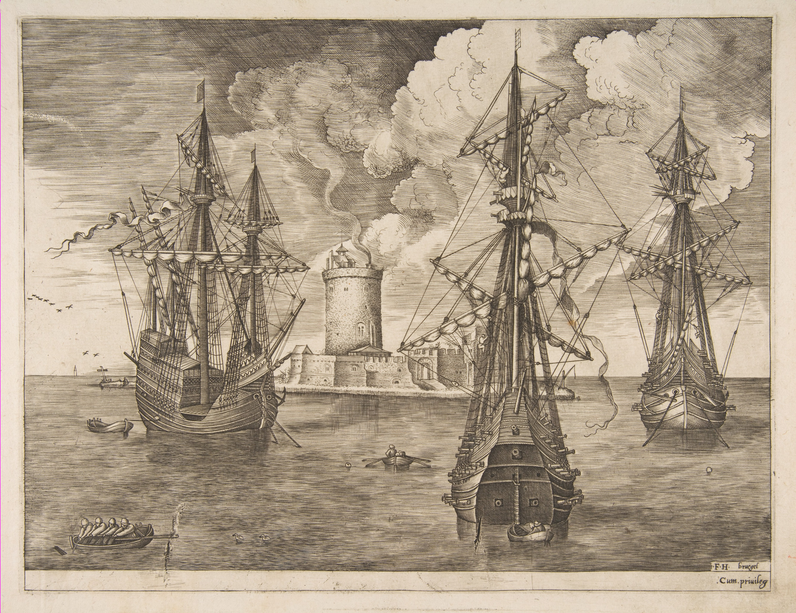
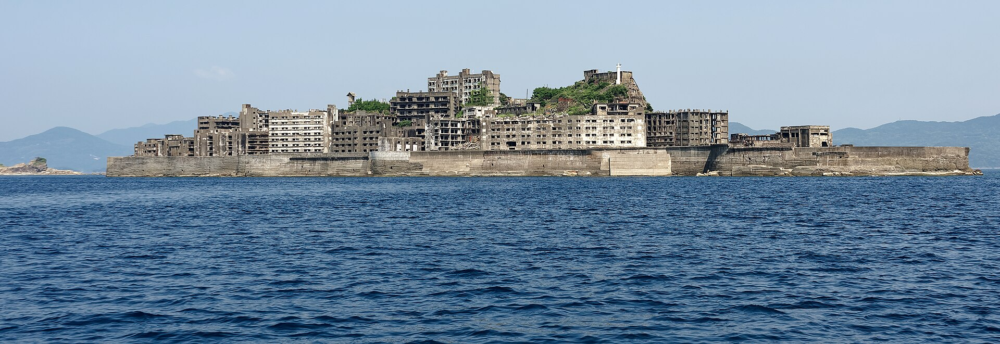
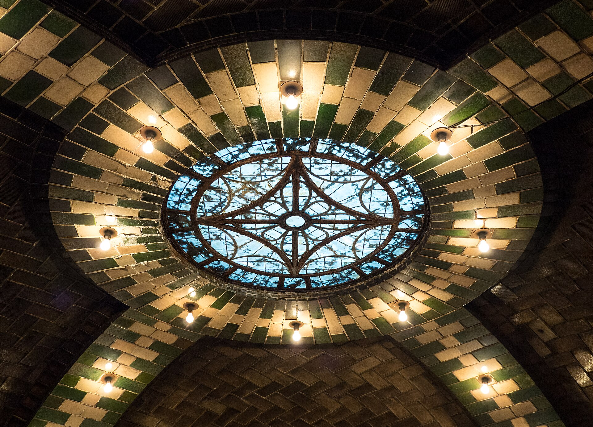

A City ThatForgot To Fall
The second exhibition. Orsade emptied in a single season. Its machines did not notice, and kept the city for three hundred years.
Orsade
Orsade stood on a breakwater of its own making, a city of nine squares poured onto a reef. Its founders distrusted heirs. They wanted a city that would not depend on the care of whoever came next, so they wrote the care into the city itself.

The Wardens
Below the streets ran the Wardens: a lattice of pumps, governors and clockwork ledgers that lit the lamps at dusk, swept the squares at night, patched the sea wall after every storm and fired the bread ovens at four in the morning. Nobody had to ask. The ledgers knew the date, and the date was enough.
The Wardens were never told why they did any of it. They had no word for a resident. They kept a ledger of duties, and a duty was done when the ledger said it was done.
The Leaving
The accounts disagree on the cause: a fever, a failed harvest on the mainland, a rumour that the reef was sinking. They agree on the speed. Between the spring tide and the autumn one, forty thousand people boarded ships and did not come back. They took what they could carry. They left the city running.


From the sea, Orsade would have looked like this for centuries: whole, lit and unoccupied.
The upkeep, year by year
Move through the years after the Leaving and read the Wardens' ledger as it stood. Each duty was kept until the last part that could perform it wore out.
Five of ten duties still kept.
- Bread ovens fired at fourstopped in year 12
- Post sorted and delivered to empty housesstopped in year 57
- Harbour tram on its timetablestopped in year 96
- Fountains running in the nine squaresstopped in year 141
- Reading rooms dusted and airedstopped in year 177
- Sea wall patched after stormsfaltering
- Squares swept at nightkept
- Street lamps lit at duskkept
- Clock towers striking the hourkept
- Harbour light turningkept
What remains
Sailors who passed the reef reported lights in the windows long after any record of a resident. Some put in to trade and found the squares swept and nobody to sell to. The museum holds their logbooks, a run of ledger pages, and one brass governor still set to the hour. The clocks, as far as anyone knows, have not stopped.

Orsade did not fall.
It was simply never told to stop.
Pictures: "Veduta della Piazza della Rotonda" and "Carceri XVI" by Giovanni Battista Piranesi, public domain; "Hashima, Nagasaki, Japan" by Jakub Hałun, CC BY 4.0; "Skylight in the abandoned City Hall Station" by Rhododendrites, CC BY-SA 4.0. All via Wikimedia Commons, except "Four-Master and Two Three-Masters Anchored near a Fortified Island with a Lighthouse" after Pieter Bruegel the Elder, CC0, the Metropolitan Museum of Art.


.jpg){kind=link}